Simple Waveguide Filter Design
This is a “getting started” tutorial about how to design a simple waveguide interference reject filter using new online version of WR-Connect (version 2.0).
Let us imagine (the problem stated here is not real), our Ku-band satellite TV receiver (it has been working fine for years) has stopped working properly (distortions, static, errors, etc.). The possible reason is an interference caused by a new weather or airport radar appeared nearby recently. We have also found that the thing is working at 9.5 GHz.
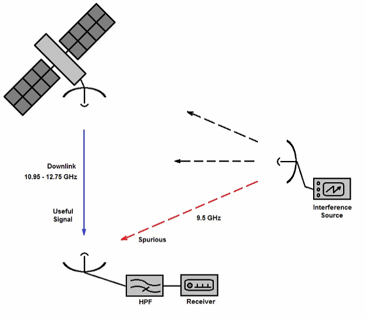
Figure 1: Schematic representation of satellite Ku-band downlink reception affected by unwanted interference
A simple solution of this problem would be a high-pass filter, which would pass our “shows” transmuted from the satellite (see Figure 1) at frequencies from 10.95 GHz to 12.75 GHz (Ku-band typical downlink frequencies) and reject the spurious interference (9.5 GHz). After closer look at our receiver station, we also found some space to put such a filter between antenna output and receiver input, which are connected with conventional WR-75 flanges.
In terms of design goals, we would need a waveguide high-pass, band-pass or band-stop filter with sufficiently good characteristics, such that it would not impair the quality of the receiving signal to any noticeable degree. Let us target the following parameters:
Table 1: A specification with list of important parameters and their targetted values.
|
Parameter |
Value |
Notes |
|
Pass-Band, GHz |
10.95 - 12.75 |
Reception signals frequency range |
|
Insertion Loss, dB |
< 0.2 |
Receiver noise figure is 0.6 dB. We don’t want to degrade it too much. |
|
Return Loss, dB |
> 18 |
To minimize in-band ripple caused by standing wave |
|
Stop-Band, GHz |
9.4 - 9.5 |
Unwanted interference signals |
|
Rejection, dB |
> 40 |
The attenuation needed to remove the interference |
|
Size W x H x L, inch |
< 2.0 x 1.8 x 4.0 |
We have no more space for the filter |
Within common RF/microwave engineering art, many types of waveguide filters have been invented, studied and intensively utilized in various RF systems. In the public domain, according to the RF/microwave engineering handbooks, publications and patents, at least more than hundred of waveguide filter concepts are disclosed. Despite the broadband knowledge on the filters, a designer always face a challenge when designing a filter for particular application. This is because each RF system usually has its own individual and often unique requirements to a filter. The optimal design concept is usually considered one that not only satisfies all the parameters of the specification with a good margin, but also is technological, inexpensive and reliable in operation. A proposed design concept is commonly considered as good one, when it meets all parameters of the specification with good margins, it is technologically simple, inexpensive and reliable in operation. In other words, the best design is optimized over a preferred trade-off between the performance, technological feasibility and cost. In our case, we are very limited in the technology and the budget. Let's start with what we can do in our current conditions (workshop in basement) and what kind of materials and tools we can get. We guess we are able to make a simple iris filter based on a standard WR-75 copper waveguide tube and a couple of appropriate cover flanges by just soldering (more simple tools might be needed).
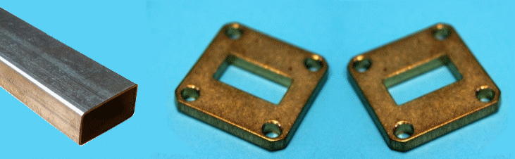
Figure 2: WR-75 waveguide tube and 2 cover flanges
The iris filter is perhaps the most old, known, popular and the simplest waveguide band-pass filter type. It can be made from thin inductive diaphragms (irises) placed in a waveguide. The technologically simplest way would be putting the irises from one side of the waveguide (asymmetrically as shown on Figure 3).
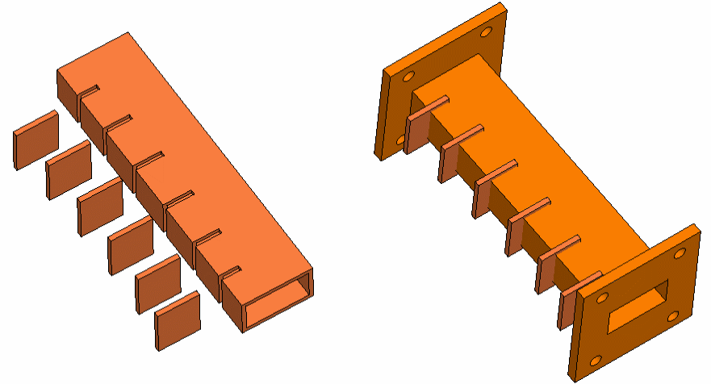
Figure 3: Simplified images showing the asymmetric waveguide iris filter fabrication steps
Thus, we have found a simple and inexpensive technological way of making a waveguide filter in general. Now we need to check if this type of waveguide structure can perform electrically in the way to meet our specification (Table 1). In the other words, we need to find out if our design concept actually works in respect to our requirements and we want to do it fast (we don’t want to waste much of time for useless ideas). WR-Connect is a perfect tool to do this as it is simple, flexible, fast and free to use.
According to a common view, the RF filter engineering is a sophisticated mathematical discipline about polynomials, matrices and special functions, which does not have obvious links to the real world. Actually, many engineering books and university courses on electrical filters pay more attention to idealistic mathematical interpretation than their practical implementation. Therefore, the design process of an electrical filter is usually based on selection and fitting common polynomial functions (Butterworth, Chebyshev, elliptic, etc.) and further applying appropriate synthesis methods following corresponding equivalent networks. We do not want to go this way, because it is practically complex, generally inaccurate and rarely applicable to the all filter ideas possibly generated by our brains. A lazy but efficient filter design approach is proposed here, which does not require an expert type of knowledge on the filters theory. This simple procedure can be applied to practically any direct or quarter-wave coupled filter (see definitions in [1]) and described in several steps:
We put identical irises in the waveguide and at the same distance from each other.
Run simulation and plot S11 and S21 magnitudes.
Spot the positions of the pass-band and stop-band over the specs. The pass-band can be defined as the bandwidth containing reflection (S11) zeros and ripples. The stop-band we define as the bandwidth from both sides of the pass-band, where the transmission (S21) magnitude monotonically decreases on the both directions.
If the pass-band contains the specified bandwidth and the rejection is greater then specified, then continue to the step # 5. If it does not, make necessary adjustments (listed below) and return to the step #2.
If the pass-band is too narrow, then increase iris coupling by increasing of the width of aperture. In vice versa, when bandwidth is too wide, reduce the iris width.
If the pass-band is offset, change the length between the irises. Increase the length between the irises to move the bandwidth down and, vice versa, reduce the distances to move the bandwidth up.
If the pass-band is correct but the rejection is not achieved, increase the number of poles by one (insert one iris and one node in the middle).
Set optimization goals and start optimization.
Run simulation and review the results.
Repeat step 5 or/and make fine adjustments to irises and distances until all specs are met with adequate margins.
Although the “designing from scratch” method requires multiple simulations, optimizations and manual corrections, each operation normally takes not more than tens of seconds with WR-Connect.
Once we clearly understand what we need to do, we will prepare the tools. The easiest way to get started is using an appropriate design starter page. In our case, the appropriate menu option called “H-Plane Iris BPF” can be found under “Design” menu option located on the top menu black bar. The page with basic data entry fields will be opened.
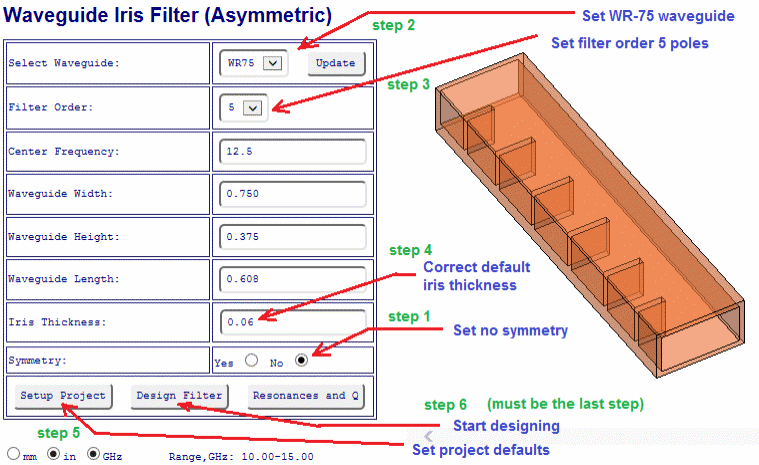
Figure 4: Screenshot with design steps. The first three steps can be performed in any order.
The initial settings can be done in few clicks as shown on Figure 4. Here we can use the initial data corresponding to the selection of WR-75, with only one change. We will change the thickness of the iris, as it is predetermined here (we will cut plates for irises from the same waveguide tube, which is 0.060 inches thick). It should be noted, the “Setup Project” button must be clicked before clicking the “Design Filter” (otherwise the active page will be navigated to the design concept editor with no basic frequency plans required for simulations). It should be also mentioned that the required frequency plans can be entered directly on the “ Setup Page” fields as well. Anyway, the frequencies and structure geometry must be entered before performing simulations.
After clicking “Design Filter” button on “H-Plane Iris BPF” page, the browser will navigate into the “ Editor Page ” (see Figure 6).
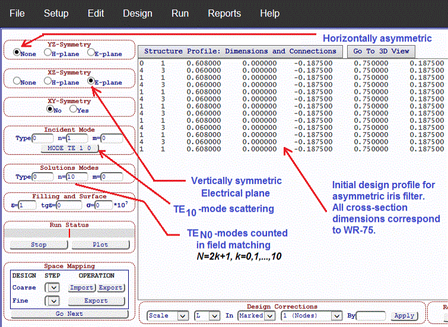
The lines of numbers in the text box correspond to the sizes of each section of the waveguide (interface, iris or cavity) that would form the waveguide filter. But all sizes of these filter elements, in cross section, correspond to a WR-75 standard waveguide cross-section dimensions. The lengths of those waveguide sections are also the same for irises and cavities. In other words, this piece of text with numbers corresponds to the design concept and is a kind of template that contains all the necessary conceptual information.
The initial design profile of our waveguide filter (Figure 5) corresponds to just straight (homogeneous) waveguide (click “Go To 3D View” button to see 3D image). Thus, if we run simulation, we should get full transmission and no reflection for all frequencies of WR-75 operation (try it by executing “Run Simulation” menu option under “Run” top menu bar item and then clicking the “Plot” button).
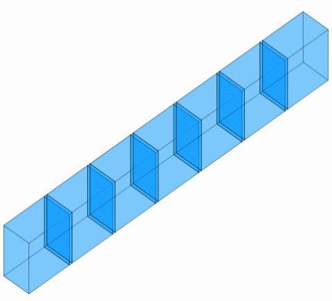
In order to create a working waveguide iris filter we need to determine proper dimensions of the irises (iris width) and the cavities (cavity length). In a general case of waveguide filter synthesis we can use the “ Run Synthesis ” menu option under “Run”. In this tutorial, however, we will do it manually following the procedure described in Section 6 above. This approach is applied here due to two reasons. 1) The conventional synthesis methods do not usually work well, if they are applied to broadband band-pass filters. The relative bandwidth of our filter is to be more than 15%. 2) They are also only applicable to a narrow class of structures having certain type of construction from elementary scattering elements (irises, posts, step junctions, etc.) and with certain coupling topology. In contrast, our design approach is universal and can be applied to any type of filter (including unknown yet). Now let us start from a periodic structure consisting from irises having same width and same distance between.
WR-Connect provide several methods for automatic changing or correcting a group of dimensions. The “Replace” function is the simplest way of changing a group of similar dimensions in one single step. Here we will create (see Figure 7 with instructions) a rough blank of a waveguide filter structure having the equidistant asymmetric inductive diaphragms of same width of windows (let us start from 0.5 inch).
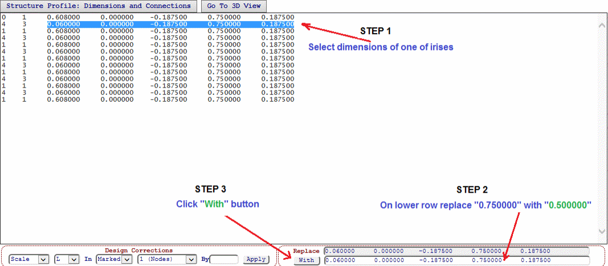
After pressing “With” button (Figure 7), all “0.750000” dimensions corresponding to rows with irises (the first dimension is 0.06) will be replaced with “0.500000”. After this operation, we get a primitive waveguide filter, a rough first approximation. If we press the “Go To 3D View” button, we will see a waveguide iris structure with identical diaphragms and cavities (Figure 8). No we can try it.
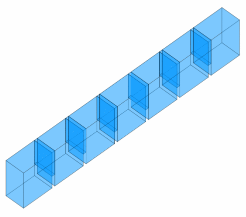
Figure 8: 3D appearance of the filter structure after replacing 0.75 iris widths with 0.5.
To run simulation (analysis of scattering parameters over a discrete frequency sweep) we just select “Run Simulation” drop-down option under “Run” menu bar item. In our case we can do it right a way, because we have already set the basic frequency plans (we did it when we clicked “ Setup Project ” button on Iris Filter Design page). Since our modal setting includes only several vertically polarized TE-modes (H-plane uniformity), the simulation takes about 5 seconds. After the red status bar (in the “ Run Status ” control area) stops expanding, and the left button below the line displays “Stop”, the simulation will end. Further, in order to see the simulation graphs, we can click the next button named "Plot" (it navigates to the "Reports Page").
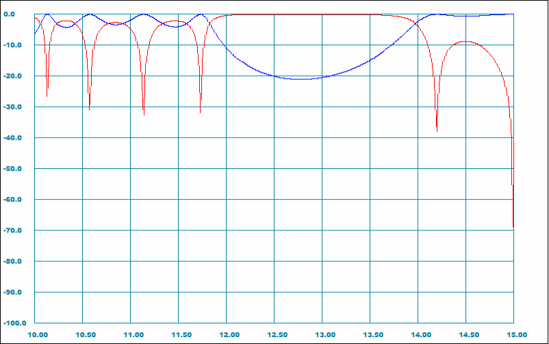
The obtained performance, however, does not look great and it is also offset (we cannot see frequencies below 10 GHz).
Since we initially selected the iris filter template based on the appropriate waveguide size, our frequency range was automatically set from 10 to 15 GHz, which corresponds to WR-75 operation frequency range. Our rejection specs of 40 dB, however, is set over the range from 9.4 to 9.5 GHz (not covered by current frequency sweep). To fix it we navigate to “Setup Page” by clicking the appropriate “Setup” menu option, then we change the settings of the sweep parameters named “Fmin” and “Fmax” by setting them 9 and 14 GHz accordingly.
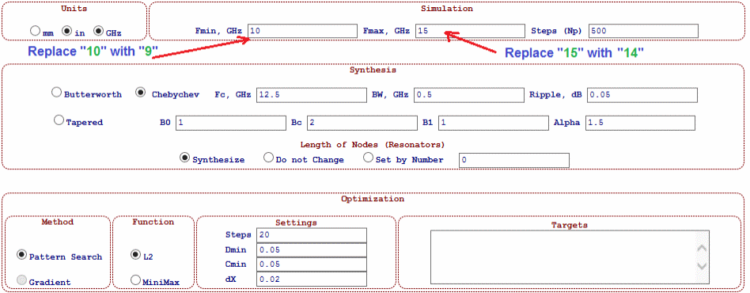
New simulation results would look like shown on Figure 11.
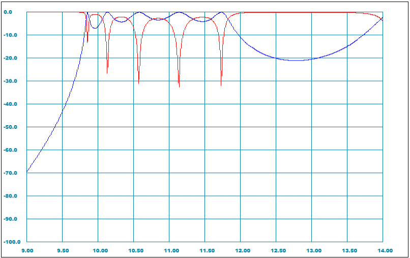
As it is mentioned in WR-Connect software introduction, the software is based on pre-solved solutions of three EM boundary (step junction, cavity junction, and iris junction) of scattering problems scattering. Those elementary problems are numerically solved in terms of variational mode-matching and then been approximated. Therefore, all solutions are approximate (since a limited number of waveguide modes are counted in the solution) with different level of fidelity. According to convergence analysis and practical correlations, the cavity junction (scattering junction #2) performs the highest accuracy. Since, any waveguide structure based on irises can be also represented by coupled cavities (the cavities are between the irises except input and output). Although the both ways of representation present the same structure geometrically, WR-Connect performs the simulations using different EM models with different degrees of fidelity (cavity model is the most realistic). The iris type of structures are found to be simpler to compose and preferable to apply the synthesis methods. Therefore, WR-Connect is provided by a control for automated conversion from iris type to the cavity type and vice versa in a single click of mouse. The Iris/Cavity conversion controls are under the “Edit” menu (top menu bar) and named “Convert to Irises” and “Convert to Irises” respectively. So, if we click the “ Convert to Irises ” option, the text window content will change (see left column in Table 2 below) and two more lines will be added. If we, however, look at 3D view, no any difference in appearance will be noticed.
Table 2: Same waveguide structure of irises represented in cavity junctions
|
0 1 0.608000 0.000000 -0.187500 0.750000 0.187500 0 0 0.000000 0.000000 0.000000 0.000000 0.000000 4 1 0.060000 0.000000 -0.187500 0.500000 0.187500 1 2 0.608000 0.000000 -0.187500 0.750000 0.187500 4 1 0.060000 0.000000 -0.187500 0.500000 0.187500 1 2 0.608000 0.000000 -0.187500 0.750000 0.187500 4 1 0.060000 0.000000 -0.187500 0.500000 0.187500 1 2 0.608000 0.000000 -0.187500 0.750000 0.187500 4 1 0.060000 0.000000 -0.187500 0.500000 0.187500 1 2 0.608000 0.000000 -0.187500 0.750000 0.187500 4 1 0.060000 0.000000 -0.187500 0.500000 0.187500 1 2 0.608000 0.000000 -0.187500 0.750000 0.187500 4 1 0.060000 0.000000 -0.187500 0.500000 0.187500 0 0 0.000000 0.000000 0.000000 0.000000 0.000000 0 1 0.608000 0.000000 -0.187500 0.750000 0.187500 |
Node N1 (Input) Junction J0 (Step) Node N1 (Iris) Junction J2 (Cavity) Node N1 (Iris) Junction J2 (Cavity) Node N1 (Iris) Junction J2 (Cavity) Node N1 (Iris) Junction J2 (Cavity) Node N1 (Iris) Junction J2 (Cavity) Node N1 (Iris) Junction J0 (Step) Node N1 (Input) |
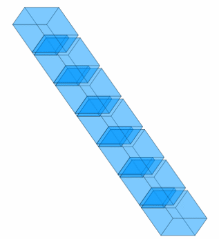 |
Nevertheless, if we simulate the same but reconfigured structure, we will see a slight difference in simulation results (see correlation plots on Figure 12 below). The new simulation of transmission magnitude (blue) shows a slightly wider bandwidth.
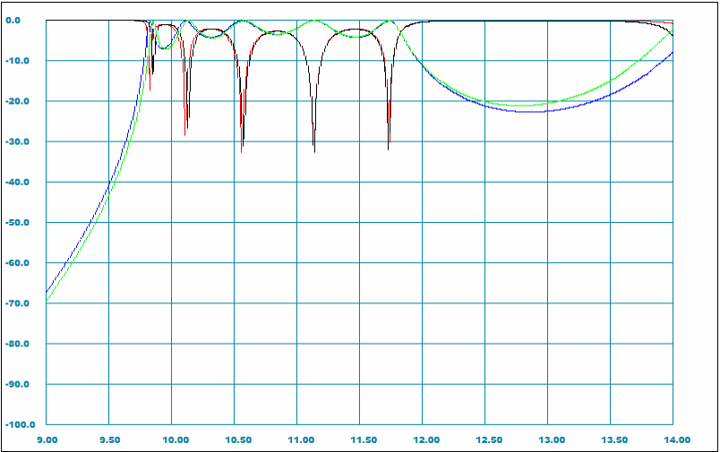
Now we can continue on actually designing the iris filter.
Observing the simulated performance (Figure 11) we can notice that our set of irises actually works as a high-pass filter, but the achieved performance is definitely not great. Nevertheless, it can be accepted as a zero approximation. We can also notice that our pass-band (a bunch of return loss ripples and poles located between 9.9 and 11.7 GHz) is about 1 GHz lower than targeted according to our spec (Table 1). It should be also mentioned that we still need some more bandwidth to provide good margins. Thus, we would need to move the filter bandwidth up for about 1 GHz and make it wider for about 500 MHz (just a guess). According to conventional direct coupled waveguide filters theory, we are provided with the following controls over those parameters:
Increase widths (the windows) of all irises simultaneously to make the bandwidth wider.
Reduce widths of all irises simultaneously to make the bandwidth narrower.
Reduce lengths of all cavities simultaneously to move the bandwidth up (filter’s center frequency will be increased).
Increase lengths of all cavities simultaneously to move the bandwidth down (filter’s center frequency will be reduced).
At the same time, it should be taken into account that the changing any of those controls (iris width or cavity length) has actually effects the both frequency parameters (bandwidth and center frequency changing). For example, if we reduce the size of the iris aperture, in addition to reducing the actual bandwidth, the center frequency of the bandwidth will be affected and increased (but in a smaller degree).
Observing the plots on Figure 11 from the both simulations (cavity and iris configurations), we would just reduce lengths of cavities (reduction of the cavities will increase the coupling between them also). To do so, we can use the same “Replace” method as we have done it in the Section 10. We can try several guesses and reduce the cavities lengths from current value “0.608000” up to “0.4500000” until the bandwidth covers the specified frequencies (from 10.95 to 12.75 GHz ) with margins and the lower roll-off also provides a good rejection of 9.5 GHz. In result, the value of “0.48” looks an optimal fit. Now the structure profile (junctions and dimensions list) will be as shown in Table 3 below.
Table 3: Structure profile data with new dimensions (marked red)
|
0 1 0.480000
0.000000 -0.187500 0.750000 0.187500
0 0 0.000000 0.000000 0.000000 0.000000 0.000000 4 1 0.060000 0.000000 -0.187500 0.500000 0.187500 1 2 0.480000 0.000000 -0.187500 0.750000 0.187500 4 1 0.060000 0.000000 -0.187500 0.500000 0.187500 1 2 0.480000 0.000000 -0.187500 0.750000 0.187500 4 1 0.060000 0.000000 -0.187500 0.500000 0.187500 1 2 0.480000 0.000000 -0.187500 0.750000 0.187500 4 1 0.060000 0.000000 -0.187500 0.500000 0.187500 1 2 0.480000 0.000000 -0.187500 0.750000 0.187500 4 1 0.060000 0.000000 -0.187500 0.500000 0.187500 1 2 0.480000 0.000000 -0.187500 0.750000 0.187500 4 1 0.060000 0.000000 -0.187500 0.500000 0.187500 0 0 0.000000 0.000000 0.000000 0.000000 0.000000 0 1 0.480000 0.000000 -0.187500 0.750000 0.187500 |
The simulated performance of the updated structure (Table 3) is displayed on Figure 13 below with instructions for the next steps (next section). Now it can be visually confirmed that the bandwidth of the ripples covers the specified pass-band (10.95-12.75 GHz)with margins and the attenuation of the specified stop-band (9.4-9.5 GHz) is greater than the specified value of 40 dB with a margin. The achieved performance, however, is still far to be acceptable. We would need to achieve the return loss target while keeping the rejection to be not worse than specified.
In other words, we need to optimize our design in respect to our performance standards. WR-Connect is provided with a pattern search optimizer (the gradient optimizer is not available yet).
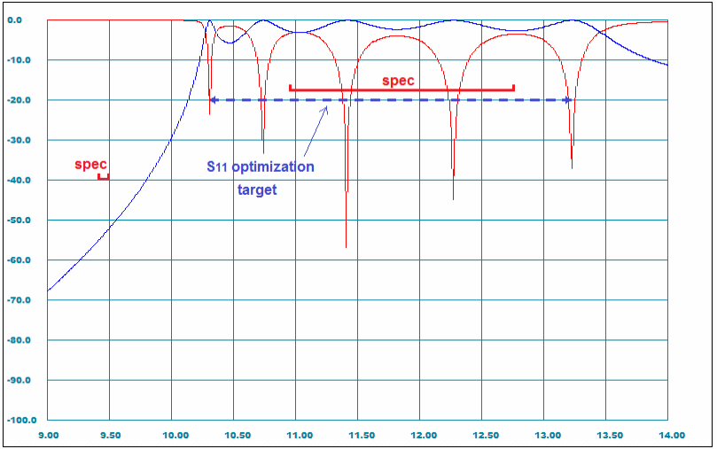
Optimization methods are very widely used by modern RF designers, who often even prefer direct solving the optimization problem than rather using common filter synthesis methods [2]. This is because the optimization techniques are straightly based on maximizing the “design performance function”, which can be defined in respect to the technical parameters to be achieved. In the other words, a correctly set optimization problem has a solution, which is the best over a given set of targetted parameters. Even so, defining the right optimization function, parameters and goals in the optimization task is not a simple task either. Generally, there are no universal rules or instructions except of keeping trying (we will do the trying here). When observing the results of the last simulation (Figure 13), we can get an impression that we only need to improve the current return loss of our filter. It seems, if we do it, everything else will automatically fall into the spec lines. It is not as simple usually, but it is normally achievable in several iterations. During each iteration we would need to update the optimization targets to the current state of performance and possibly make some adjustments to the bandwidth (if something went wrong). All those manipulations could be easily performed with WR-Connect. Then, let us start.
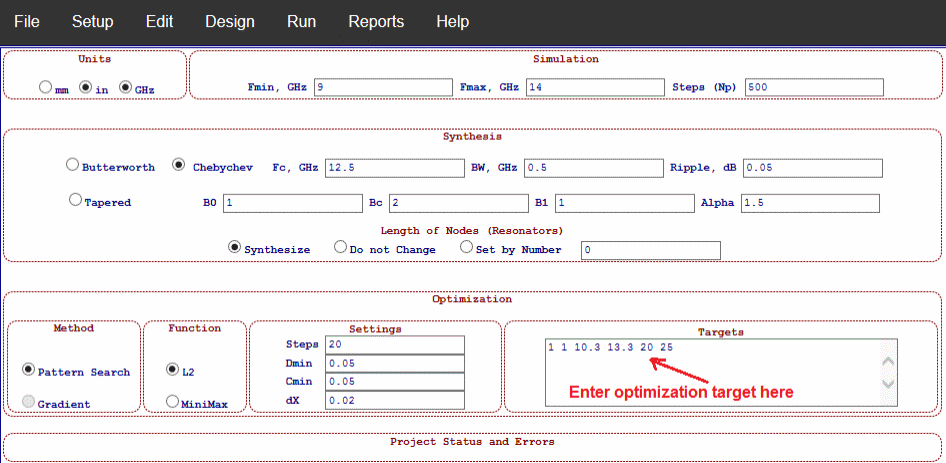
The only thing we have to do is entering the optimization specs into the appropriate field new goals in the optimization field. We need to enter six numbers into the text field named “Targets” at the right bottom corner of the “ Setup Page ” as marked on Figure 14. Those numbers must be separated by at least one space and they have the following interpretation:
First two numbers show the s-parameter path indexes. In our case we have “1 1”, so we optimize S11.
The second two numbers are real numbers showing the frequency range to be optimized. In our case, we are going to optimize the bandwidth from 10.3 GHz to 13.3 GHz.
The fifth number in the line is also a real number but specifying the dB-magnitude of the s-parameter to be reached. In our case we want the return loss to be better than 20 dB (the sign does not matter). The optimizer will be set to get |S11| to be lower than -20 dB (the less the better) in a mean squared definition (if L2 is checked).
The last number is a natural number showing the number of frequency points taken for s-parameter evaluation over the specified frequency range. In our case, we entered 25 points (5 points for each filter pole).
The other optimization parameters are left with their default values. Questions could be raised “why we target only S11?” or “why we set L2 function instead of MiniMax?”. All tricks we use when we optimize things (even in our real life) are often based on our experience and there are too many preferences and constrains making the problem to be very complex. Therefore, in most cases (especially in design engineering), it is better to keep it simple and make it fast. Using L2 and optimizing only return loss are practically found more efficient.
After we entered the optimization targets (Figure 14), we can launch optimization process by clicking the “Run Optimization” drop-down item located under “Run” top menu. It would take about half of a minute for optimization to end and the dimensions window on “Editor Page” will be updated. The next step would be to run simulation again (click “ Run Simulation ” drop-down option under “Run” menu). The obtained characteristics are still not good enough, so we would need to run optimization the second time. After two runs, we would further improve the return loss (Figure 15).
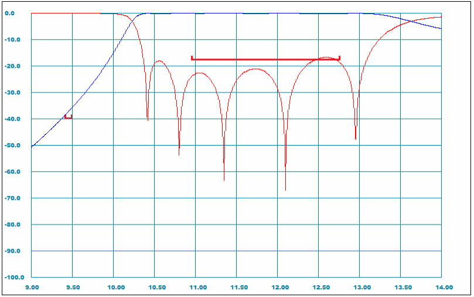
Thus, our filter is almost there. We would need just some minor adjustments. We would try to run optimization again with a rejection spec included but we go a different way (the purpose of this tutorial is to learn how to use the WR-Connect tools).
Let us make the bandwidth narrower (we have it too wide) and move it up to get more margins (we need good margins because our production method is very inaccurate). Let us try to reduce the widths of all irises instantly. If we do so, the filter bandwidth will be narrowed and also moved up (since the irises contribute inductive effects). WR-Connect is provided with a special tool for automatic correcting or scaling a group of dimensions. If we look to the design profile records (Figure 15), we can see the first column of numbers. Each of those numbers points to a certain dimension in the node or junction, which is marked for a change if a synthesis, optimization or scaling method is applied. During that process, the software algorithm is set to change only those “marked” dimensions. When we executed optimizations, only “marked” variables have been updated. Those dimensions are set as #1 (to update the length L) and #4 (to update the position of right sidewall X1). We can also notice that the first and last nodes/junctions are not marked. This because the first and last nodes are interface dimensions and the second junctions from the ends are step junctions with no dimensions. In the other words, during optimization only lengths of cavities and widths of irises have been set to be changed during the process. Here below (Figure 16), in a similar way, it is instructed how to scale the width of each irises for 5% reduction.
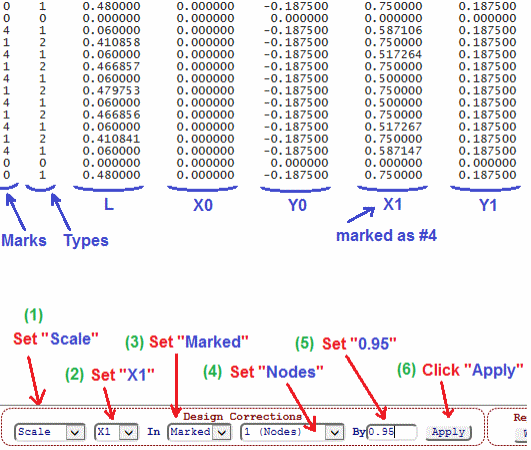
The appropriate controls named “Design Corrections” have to set in the following way:
The first option is to be set for “Scale”. This means that each dimension number will be multiplied by the same number (the factor).
The second option is to be set as “X1” (dimension #4), which is the iris dimension (the width) used to control the coupling.
If the third option is set as “Marked”, only the “marked” dimensions will be scaled. The dimensions with 0 mark will not be touched.
The forth option is to be set to “Nodes”. This makes the algorithm to modify X1 dimensions only in the nodes (identified as Type 1), which are actually irises in our structure. In this case the cavities (Type 2) will not be touched and input and output nodes will remain same also (because they are marked as 0).
The last entry (labelled as “By”) is the field for a scaling factor. In our case, we try 0.95, which is just 5% reduction.
After all those options (listed above) are set, we can click the “Apply” button to apply the scaling factor to the right dimensions.
After pressing the “Apply” button, all irises will be reduced 0.95 times and the appropriate values in the schematic profile content will be updated. As usual, after any modification of the structure, we need to run the simulation and review the results to confirm if everything is going fine. The simulation results (omitted here) now show that the filter bandwidth became narrower and moved up, but it is also degraded a little (the return loss is about 17 dB). So, one more optimization would be required. Since the bandwidth is changed, we need to update the targeted bandwidth (now it is from 10.7 to 13 GHz) as well. In a same manner, we can run the optimization two times without changing the other optimization parameters (to make it simple). After the optimizations, we would obtain an acceptable performance (Figure 17).
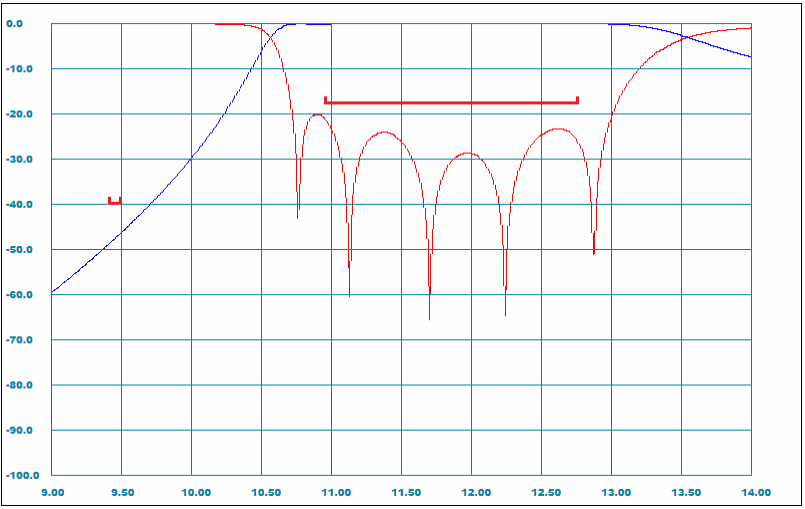
The list of filter dimensions can be directly extracted from the structure profile (Table 4) displayed below.
Table 4: The textual content of the structure schematic of post-optimized (see responses on Figure 17) filter structure (see 3D view on Figure 18).
|
0
1 0.480000 0.000000 -0.187500 0.750000
0.187500
0 0 0.000000 0.000000 0.000000 0.000000 0.000000 4 1 0.060000 0.000000 -0.187500 0.578867 0.187500 1 2 0.396588 0.000000 -0.187500 0.750000 0.187500 4 1 0.060000 0.000000 -0.187500 0.497326 0.187500 1 2 0.473299 0.000000 -0.187500 0.750000 0.187500 4 1 0.060000 0.000000 -0.187500 0.475000 0.187500 1 2 0.489567 0.000000 -0.187500 0.750000 0.187500 4 1 0.060000 0.000000 -0.187500 0.475000 0.187500 1 2 0.473299 0.000000 -0.187500 0.750000 0.187500 4 1 0.060000 0.000000 -0.187500 0.497329 0.187500 1 2 0.396360 0.000000 -0.187500 0.750000 0.187500 4 1 0.060000 0.000000 -0.187500 0.578908 0.187500 0 0 0.000000 0.000000 0.000000 0.000000 0.000000 0 1 0.480000 0.000000 -0.187500 0.750000 0.187500 |
Open Project in Editor See 3D Image |
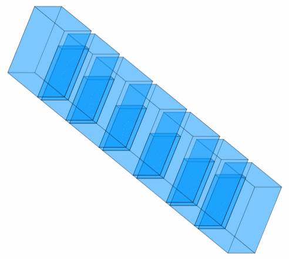
Figure 18: 3D view image of the post-optimized filter structure corresponding to the schematic and dimensions profile written in Table 4.
By default settings the surface of the waveguide structure is assumed to be a perfect conductor (having infinitive conductivity). Nevertheless, the default value of conductivity is set as zero for a convenience. Setting the appropriate number for surface conductivity is generally recommended at the last design steps prior to finalization. This is because the realistic settings do not make a noticeable difference to the rough return loss and attenuation characteristics, but they would significantly slow down the simulations and make the design process longer. Therefore, it is recommended to set the surface conductivity when the design is already finalized. Then, the conductivity value (relative to 10^7 S/m) is to be entered into appropriate field (see Figure 19).
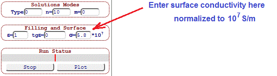
Finally, in a same manner, we run simulation, plot the results and extract in-band insertion loss over pass-band characteristic (Figure 20) by adjusting the grids and scales.
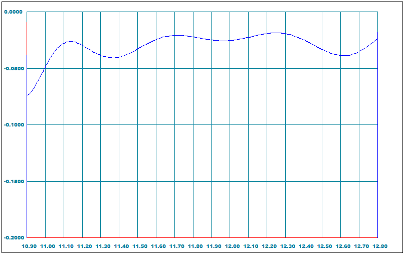
The exterior box of the internal dimensions of our filter are displayed at the top of its 3D view and labelled as “Envelope Size”, which shows “0.750 x 0.375 x 3.549”. Those dimensions are the dimensions of the smallest parallelepiped, which contains all waveguide structure from the “Design Page”. They are actually the waveguide channel dimensions with no walls thickness applied. In our case when taking into account the walls (0.06’’) and flanges ( 1.5’’ x 1.5’’ ), we would suggest that our filter fits 1.5’’ x 1.5’’ x 3.55’’ envelope.
Finally, we can summarize the expected values of all specified parameters (Table 1) and put them against their targeted values (Table 5).
Table 5: Specified parameters and their expected values
|
Parameter |
Value |
Expected |
Notes |
|
Pass-Band, GHz |
10.95 - 12.75 |
10.95 - 12.75 |
Compliant |
|
Insertion Loss, dB |
< 0.2 |
0.12 |
Compliant |
|
Return Loss, dB |
> 18 |
20 |
Compliant |
|
Stop-Band, GHz |
9.4 - 9.5 |
9.4 - 9.5 |
Compliant |
|
Rejection, dB |
> 40 |
45 |
Compliant |
|
Size W x H x L, inch |
< 2.0 x 1.8 x 4.0 |
1.5 x 1.5 x 3.6 |
Compliant |
Until now, there has never been a mention of how to save work, although this is important.
"WR-Connect", as it was said, is based on scripts that are executed directly in the browser.
Therefore, each browser has its own limitations on what and how can be imported to the
client's computer. In other words, it is not as simple as with home programs installed
on the computer. "WR-Connect" has a special “File Page” (click the option of
the same name on the main menu) to import and export the project file.
There, the user will have stwo ways to save the project file.
1. The surest way is to simply mark all the text in the window and copy it to any text editor
and then save it to any place on the drive.
2. Click on the "Export Project" option. But here, each browser behaves differently.
The user may be given the opportunity to record a file using a dialogue as in
the MS Internet Explorer.
Or this file will automatically load into the "Downloads" folder (Google Chrome).
Or nothing at all.
The same ways can be used when importing the project file back to the design environment.
We could conclude that our task has been completed. In fact, we developed a good and affordable “budget” filter design, designed it and calculated the dimensions and performance. We can start sawing the waveguide tube, cut out the plates and solder everything in a row. However, this is not the case, unfortunately. We just developed a good concept that suits us in terms of budget, technology and electrical parameters. That is, in fact, we can only say that we can make such a filter with such characteristics. But to make it in real metal is completely different. There is still much to think about and consider. At first, we need to know how accurately we calculated this design, characteristics and parameters. In other words, what is the accuracy of our calculation tools? At second, we need to know how accurate our technological process is. We should definitely expect significant tolerances (maybe 0.005’’ or even more). At third, based on our design and production errors/tolerances, we need to find some ways how to compensate them. It is very possible, we would need tuning. If we do, we would need to know about the tuning ranges. All this should be taken into account and properly compensated, but we will discuss this another time. Here, however, the purpose of this tutorial is limited only to the development of a concept, which we did a great job of.
[1] R. E. Collin, Foundations for Microwave Engineering, 2nd edition, Wiley-IEEE Press, Hoboken,
N.J., 2001.
[2] F. De Paolis, R. Goulouev, J. Zheng, and M. Yu, “CAD Procedure for
High-Performance Composite Corrugated Filters,” IEEE Trans. Microw.
Theory. Techn., vol. 61, no. 9, pp. 3216–3224, Sept. 2013.